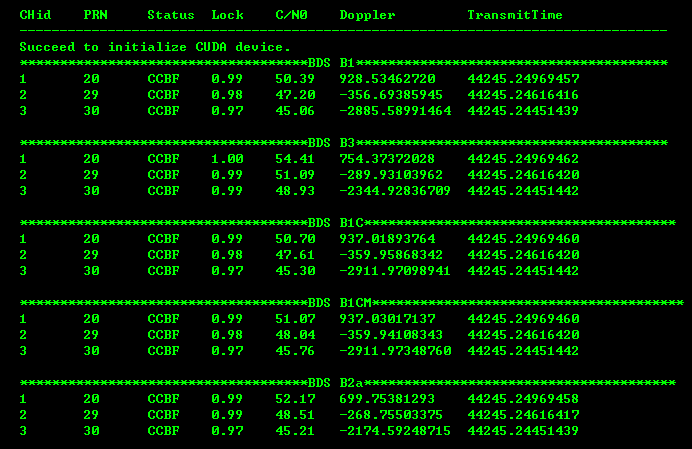
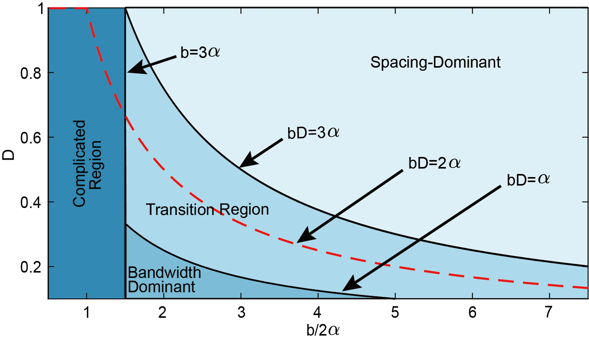
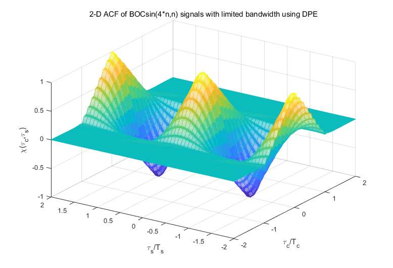
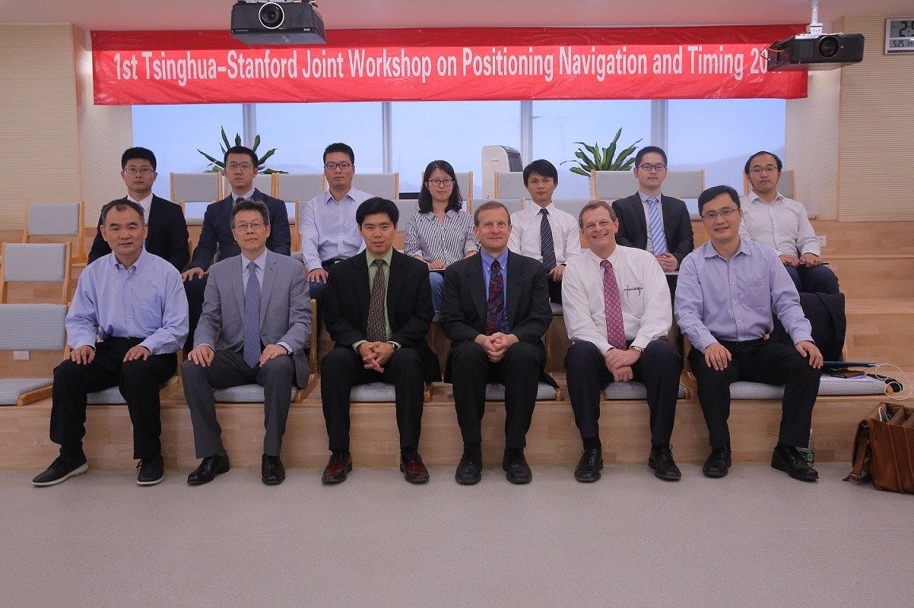

Design and Implementation of Real-time Software Receiver for BDS-3 Signals
Yang Gao, Zheng Yao, Mingquan Lu.
Submitted to Navigation: Journal of The ION, 2018.
Yang Gao
Think deeply, Keep coding, and Research more
About
I am currently a PH.D. student in information and communication engineering at the Department of Electronic Engineering in Tsinghua University, Beijing, China. I received the B.Eng. degree in electronic information science and technology in 2013 from Tsinghua University. I have been working toward the Ph.D. degree since 2015 in Institute of Information System, Tsinghua University, under the supervision of Prof. Mingquan Lu and Prof. Zheng Yao. My current research focuses on new generation GNSS signal processing and real-time GNSS software receiver.
This is my detailed CV.
[2018-06-09] I give a presentation at 19th PhD student forum of the Department of EE!
[2018-06-09] I give an invited talk on behalf of my colleague Yang at Panel 3 of CSNC 2018!
[2017-12-26] One paper is accepted by Springer GPSS!
[2017-11-18] I give a presentation at 505th PhD student forum of Tsinghua and win third-class prize.
[2017-05-25] I give a talk at the 1st Tsinghua-Stanford Joint Workshop on Positioning Navigation and Timing.
Publications


Theoretical analysis of unambiguous 2-D tracking loop performance for band-limited BOC signals
Yang Gao, Zheng Yao, Mingquan Lu.
Springer GPS Solutions, 2018. [PDF] [BibTex]
Yang Gao, Zheng Yao, Mingquan Lu.
Springer GPS Solutions, 2018. [PDF] [BibTex]

Generalized theory of BOC signal unambiguous tracking with two-dimensional loops
Zheng Yao, Yang Gao, Yang Gao, Mingquan Lu.
IEEE Transactions on Aerospace and Electronic Systems, 2017. [PDF] [BibTex]
Zheng Yao, Yang Gao, Yang Gao, Mingquan Lu.
IEEE Transactions on Aerospace and Electronic Systems, 2017. [PDF] [BibTex]
Talks

GNSS Software Receiver and Its Applications
Yang Gao
At The 1st Tsinghua-Stanford Joint Workshop for Positioning, Navigation and Timing, Shenzhen, TBSI, 2017.
[PDF] [SDR Demo] [News]
Yang Gao
At The 1st Tsinghua-Stanford Joint Workshop for Positioning, Navigation and Timing, Shenzhen, TBSI, 2017.
[PDF] [SDR Demo] [News]
Awards
- Third-class prize in the 505th PhD student forum of Tsinghua, 2017
- Comprehensive Merit Scholarship of Tsinghua University, 2012
- Academic Merit Scholarships of Tsinghua University, 2011,2010
Contact
Emails: yangboy0811 AT gmail.com or gaoyang13 AT mails.tsinghua.edu.cn.
You can also find me on ResearchGate, Google Scholar and GitHub.